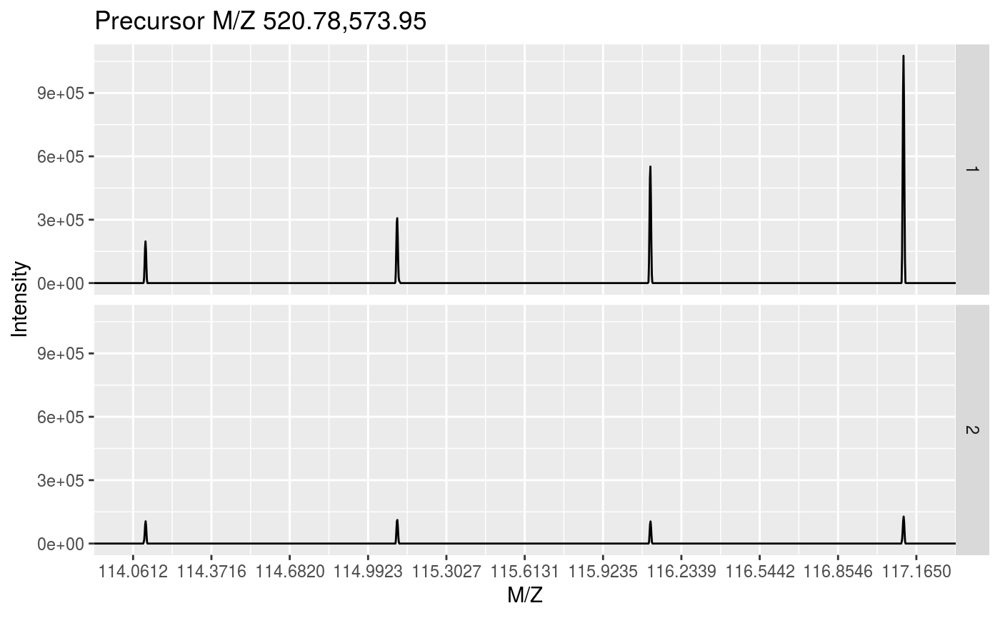
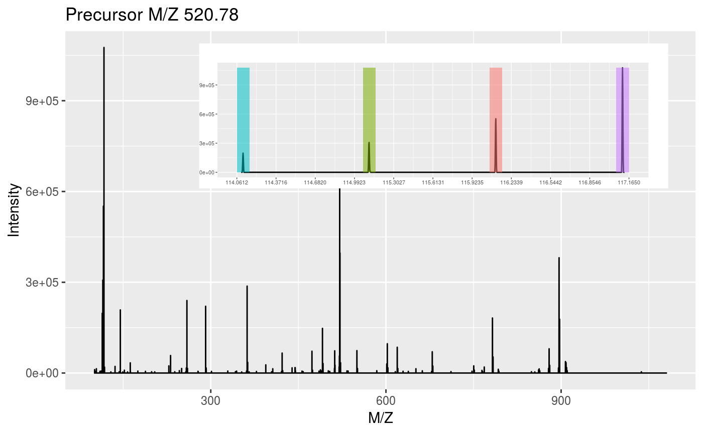
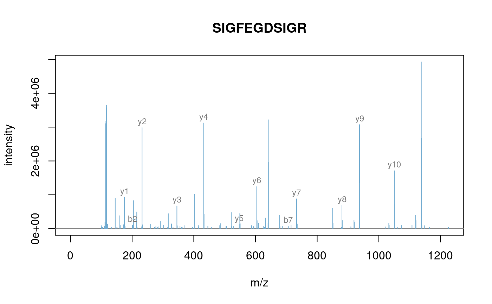
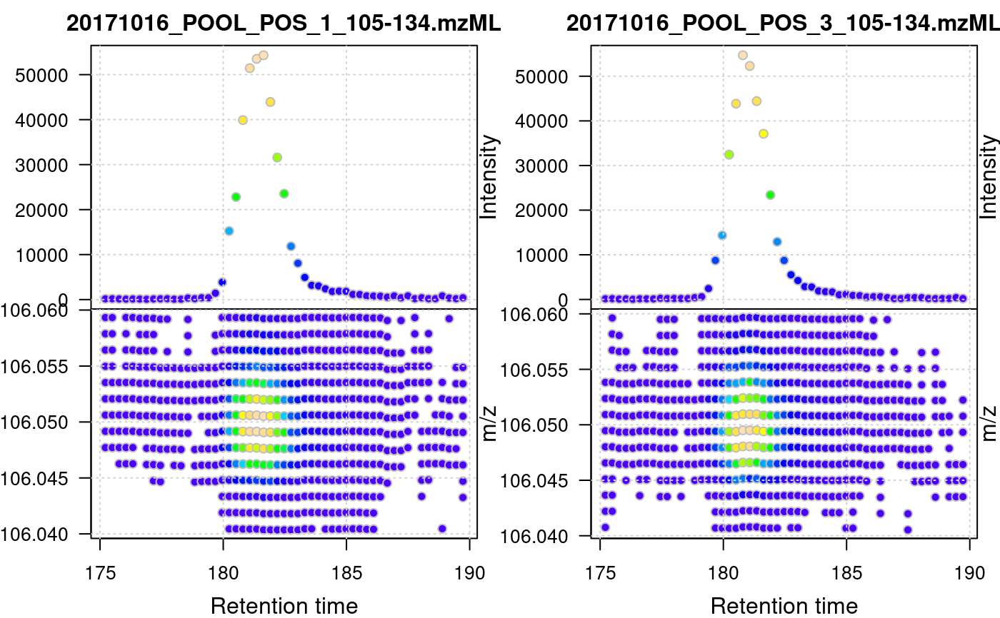

Plotting 'MSnExp' and 'Spectrum' object(s)
plot-methods.RdThese methods provide the functionality to plot mass spectrometry data
provided as MSnExp,
OnDiskMSnExp or Spectrum
objects. Most functions plot mass spectra M/Z values against
intensities.
Full spectra (using the full parameter) or specific peaks of
interest can be plotted using the reporters parameter. If
reporters are specified and full is set to 'TRUE', a
sub-figure of the reporter ions is inlaid inside the full spectrum.
If an "MSnExp" is provided as argument, all the
spectra are aligned vertically. Experiments can be subset to
extract spectra of interest using the [ operator or
extractPrecSpectra methods.
Most methods make use the ggplot2 system in which case an
object of class 'ggplot' is returned invisibly.
If a single "Spectrum2" and a "character"
representing a valid peptide sequence are passed as argument, the
expected fragement ions are calculated and matched/annotated on the
spectum plot.
Arguments
| x | Objects of class |
|---|---|
| y | Missing, |
| reporters | An object of class
|
| full | Logical indicating whether full spectrum (respectively
spectra) of only reporter ions of interest should be
plotted. Default is 'FALSE', in which case |
| centroided. | Logical indicating if spectrum or spectra are in centroided mode, in which case peaks are plotted as histograms, rather than curves. |
| plot | Logical specifying whether plot should be printed to current device. Default is 'TRUE'. |
| w1 | Width of sticks for full centroided spectra. Default is to use maximum MZ value divided by 500. |
| w2 | Width of histogram bars for centroided reporter ions plots. Default is 0.01. |
Methods
plot(signature(x = "MSnExp", y = "missing"), type = c("spectra", "XIC"), reporters = "ReporterIons", full = "logical", plot = "logical", ...)For
type = "spectra": Plots all the spectra in theMSnExpobject vertically. One ofreportersmust be defined orfullset to 'TRUE'. In case ofMSnExpobjects, repoter ions are not inlaid whenfullis 'TRUE'. Fortype = "XIC": Plots a combined plot of retention time against m/z values and retention time against largest signal per spectrum for each file. Data points are colored by intensity. The lower part of the plot represents the location of the individual signals in the retention time - m/z space, the upper part the base peak chromatogram of the data (i.e. the largest signal for each spectrum). This plot type is restricted to MS level 1 data and is most useful for LC-MS data. Ideally, theMSnExp(orOnDiskMSnExp) object should be filtered first using thefilterRtandfilterMzfunctions to narrow on an ion of interest. See examples below. This plot uses base R plotting. Additional arguments to theplotfunction can be passed with.... Additional arguments fortype = "XIC"are:colcolor for the border of the points. Defaults to
col = "grey".colrampcolor function/ramp to be used for the intensity-dependent background color of data points. Defaults to
colramp = topo.colors.grid.colorcolor for the grid lines. Defaults to
grid.color = "lightgrey"; usegrid.color = NAto disable grid lines altogether.pchpoint character. Defaults to
pch = 21.
...additional parameters for the low-level
plotfunction.
plot(signature(x = "Spectrum", y = "missing"), reporters = "ReporterIons", full = "logical", centroided. = "logical", plot = "logical", w1, w2)Displays the MZs against intensities of the
Spectrumobject as a line plot. At least one ofreportersbeing defined orfullset to 'TRUE' is required.reportersandfullare used only for"Spectrum2"objects. Full"Spectrum1"spectra are plotted by default.plot(signature(x = "Spectrum2", y = "character"), orientation = "numeric", add = "logical", col = "character", pch, xlab = "character", ylab = "character", xlim = "numeric", ylim = "numeric", tolerance = "numeric", relative = "logical", type = "character", modifications = "numeric", x = "numeric", fragments = "data.frame", fragments.cex = "numeric", ... )Plots a single MS2 spectrum and annotates the fragment ions based on the matching between the peaks in
xand the fragment peaks calculated from the peptide sequencey. The default values areorientation=1,add=FALSE,col="#74ADD1",pch=NA,xlab="m/z",ylab="intensity",ylim=c(0, 1),tolerance=0.1, relative=FALSE, type=c("b", "y"),modifications=c(C=160.030649),z=1, fragments=MSnbase:::calculateFragments_Spectrum2andfragments.cex=0.75. Additional arguments...are passed toplot.default.
See also
calculateFragments to calculate ions produced by
fragmentation and plot.Spectrum.Spectrum to plot and
compare 2 spectra and their shared peaks.
Chromatogram for plotting of chromatographic data.
Examples
data(itraqdata) ## plotting experiments plot(itraqdata[1:2], reporters = iTRAQ4)plot(itraqdata[1:2], full = TRUE)## plotting spectra plot(itraqdata[[1]],reporters = iTRAQ4, full = TRUE)itraqdata2 <- pickPeaks(itraqdata) i <- 14 s <- as.character(fData(itraqdata2)[i, "PeptideSequence"]) plot(itraqdata2[[i]], s, main = s)## Load profile-mode LC-MS files library(msdata) od <- readMSData(dir(system.file("sciex", package = "msdata"), full.names = TRUE), mode = "onDisk") ## Restrict the MS data to signal for serine serine <- filterMz(filterRt(od, rt = c(175, 190)), mz = c(106.04, 106.06)) plot(serine, type = "XIC")## Same plot but using heat.colors, rectangles and no point border plot(serine, type = "XIC", pch = 22, colramp = heat.colors, col = NA)